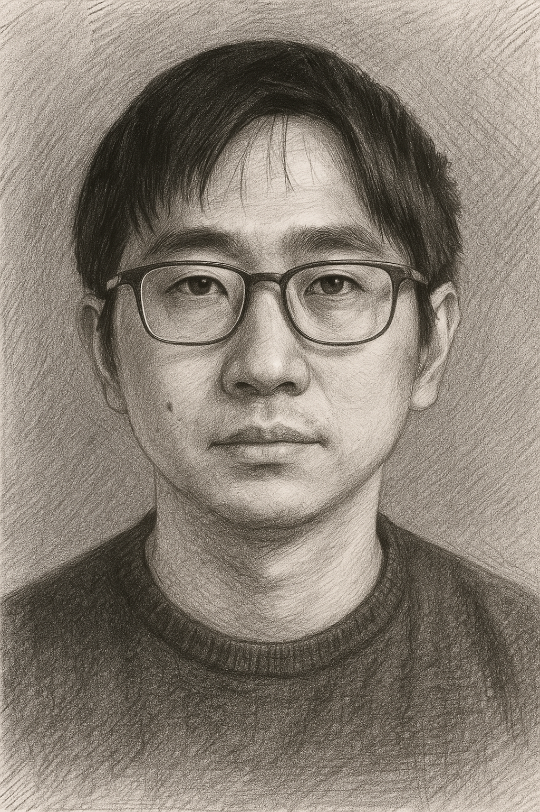
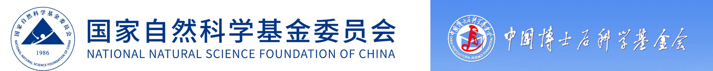

Yikang Yu
Postdoctoral Researcher · Zhejiang University
Yikang Yu is a postdoctoral researcher at the College of Chemical and Biological Engineering, Zhejiang University. He received his B.E. in Civil Engineering from Harbin Institute of Technology under the supervision of Prof. Hui Li & Prof. Xiang Xu, and his Ph.D. in Mechanical Engineering from Purdue University under the supervision of Profs. Jian Xie and Steven F. Son. His research focuses on advanced energy storage materials and systems, particularly the fundamental physics and chemistry underlying energy storage. He has authored more than 30 journal articles, with over 1,800 Google Scholar citations and an h-index of 18.
CONTACT
WORK EXPERIENCE
EDUCATION
PROFESSIONAL ACTIVITIES
AWARDS & HONORS
ACKNOWLEDGEMENTS
Financial support from the National Natural Science Foundation of China (NSFC) and the China Postdoctoral Science Foundation is gratefully acknowledged.
